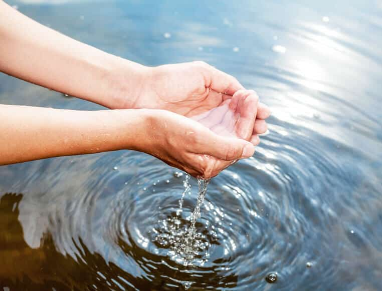

¿Alguna vez pensaste cuánta agua usamos en nuestra vida cotidiana? El agua es un recurso vital, pero no siempre la cuidamos como debemos.

¿Por qué debemos cuidar el agua?
El agua es esencial para la vida. La usamos para beber, cocinar, bañarnos, lavar y muchas cosas más. Pero el agua no es infinita, y en muchas comunidades rurales es difícil de obtener. Por eso, debemos valorarla y cuidarla.
¿Qué podemos hacer desde casa?
Cerrar la canilla mientras nos lavamos los dientes o las manos. No dejar que el agua corra sin necesidad. Reparar las fugas de agua en las cañerías. Usar menos agua al lavar los platos o la ropa.
Cuidar el agua en la comunidad
No tirar basura ni productos químicos al río o al arroyo. Mantener limpios los lugares donde se encuentra el agua. Participar de campañas de cuidado del agua en la escuela y la comunidad.
El agua es un recurso que debemos cuidar todos los días. Cada pequeña acción cuenta para que todos puedan acceder a agua limpia y segura.
— Suazo Stefania. Sede: Valle Verde A32.